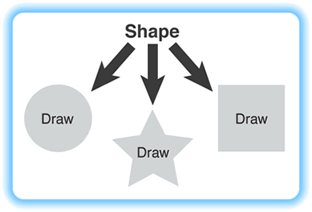

Abstract Classes
The classes used in specification inheritance are called abstract classes. The classes we've used so far are called concrete classes. An abstract class is usually an incomplete class, a class that contains certain methods that are specified, but not implemented in the definition of the class.
Because the abstract class contains these incomplete methods, it cannot be used to create objects—it can only be used as a base class when defining other classes. That is, it only makes sense in the context of polymorphic inheritance.
Suppose you have an abstract Shape base class that doesn't have the faintest notion of how to implement its abstract draw() method, yet it knows that each of its concrete derived classes will need to do so.
Only the concrete classes derived from Shape—Circle, Square, and Star—possess the necessary knowledge to actually draw() themselves. You, only need to program in terms of Shape objects; the actual shapes will take care of their own behavior.

 This course content is offered under a
CC
Attribution Non-Commercial license. Content in this course
can be considered under this license unless otherwise noted.
This course content is offered under a
CC
Attribution Non-Commercial license. Content in this course
can be considered under this license unless otherwise noted.